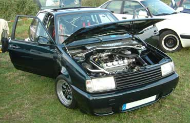
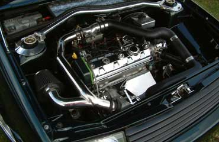
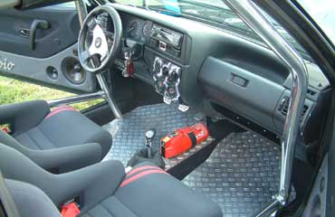
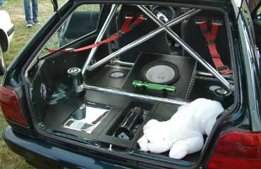
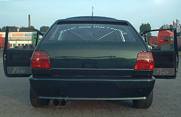

Extras
- Perlefekt Lackierung
- Colorverglasung
- Nebelscheinwerfer
- SSD
Motor
- G40
Abgasanlage
- Jetex Edelstahl Komplettanlage ab Kat mit 2 x 76mm DTM Endrohre
Bremse
- G40 mit lackierten Bremssättel
Felgen / Reifen
- Smoor Roadstar, VA 7 x 13 ET20, HA 8 x 13 ET15
- Felgenbetten hochglanzpoliert
- Felgensterne in Wagenfarbe
- Vergoldete Schrauben
- Dunlop SP2000 175 / 50 -13
Fahrwerk
- 80 / 60 Weitec Federn
- VA: härteverst. Spax Dämpfer, HA: höhenverst. FK Dämpfer
- Härtere Bonrath Fahrwerkslager
- 16mm Spurverbreiterung vorne
- 30mm Spurverbreiterung hinten
- Polierte Alu Domstreben VA / HA
- Querlenkerstrebe
Sonstige Umbauten
Außen
- Neulack Frühjahr 2002
- Lackierte G40 Hinterachse
- Plastikverbreiterungen entfernt und Kotflügel 25mm gezogen
- Heckklappe komplett gecleant
- Nummernschild in Stoßstange
- Seitenblinker entfernt
- 2. Wischerloch entfernt
- Antennenloch entfernt
- Schloßlose Türgriffe vom Golf 1
- Lackierte M3 Außenspiegel
- JE-Design Frontgrill
- JE-Design Scheinwerferleiste
- Bonrath Einarmwischer
- Alu Dachantenne
Innen
- Polierter Überrollkäfig
- Wiechers Vollschalensitze
- Schroth Hosenträgergurte
- 30er Raid Dino Lenkrad
- Mittelkonsole ausgebaut dafür Schaltkulisse aus Riffelblech
- Momo Schaltknauf
- Alu Handbremshebel
- Polierte Tachoscheiben mit Zeigern auf 12 Uhr Stellung
- Blaue Tachobeleuchtung
- 2 Zusatzinstrumente
- Rückbank ausgebaut
- Heckausbau mit Seitenverkleidungen komplett in Kunstleder bezogen
- 5 Hallogenstrahler für Innenraumbeleuchtung
- Feuerlöscher im Fußraum
- Eigenbau Doorboards
- Elektr. Fensterheber
- Edelstahl Eistiegsleisten
- Div. Airbrush arbeiten
- Clifford Alarmanlage mit Zentralverriegelung
Motorraum
- Schlossträger gecleant
- Verchromter Ventildeckel
- Lackierter Luftfilterkasten
- Polierte Riffelblech Bateriekastenabdeckung
- Edelstahl Krümmerabdeckung
- Edelstahl Batterieabdeckung
- Chromummantelte Kabel
- Edelstahl Getriebeabdeckung
- Wischwasserbehälter in Wagenfarbe
- Edelstahlabdeckung für Bremsflüssigkeitsbehälter
Musikanlage
- Sony Minidisc Radio
- Hifonics Falcon Endstufe (560W)
- Next Q22 2-Kanal Endstufe (840W)
- Mac Audio 4-Kanal Endstufe (600W)
- Power Cap mit Digital Anzeige
- 30er Next Alu Subwoofer
- Geschlossenes Subwoofergehäuse (Eigenbau)
- 16er Next 2-Wege System
- 20er Rainbow 3-Wege System
Kontakt
dirk@vwclubms.de
 Dirk´s Erfolge
Dirk´s Erfolge
3. Platz Polo-Klasse Werningerode 2001
2. Platz Polo-Klasse Gronau 2002